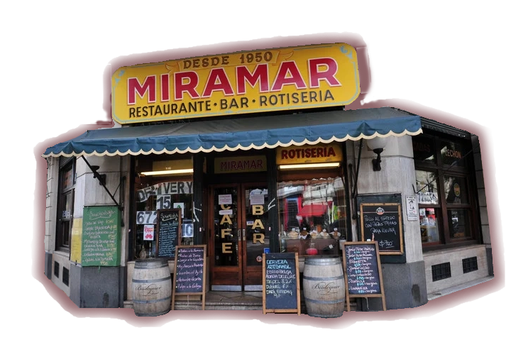

Restaurante Miramar
La familia Ramos fue su fundadora, y hoy es una Sociedad que está a cargo de este restaurante. Este rincón de Buenos Aires es de otro tiempo, todo te lleva un poco más allá. Pero lo que es maravilloso para mi son sus olores que hacen más cálido aún el lugar. Olores que ni bien entras abrirán tu apetito.
A este lugar también se lo conoce como la Rotisería Miramar, ya que en un inicio era un bar-rotisería. Miramar, el bodegón de Buenos Aires, está ubicado en una esquina de mi Buenos Aires, exactamente, en la esquina de la Avenida San Juan y Sarandí.